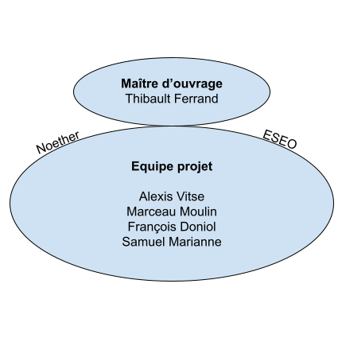
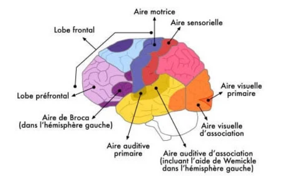

1. Outils de suivi de projets
A. Expression des besoins
Nous cherchons à détecter les anomalies de mémoires immédiates
Objectifs
A court terme :
Mise en place d’un test de mémoire immédiate
Gestion d’un base de données à l’échelle du groupe
A long terme :
Diagnostic de troubles à la mémoire immédiate
(optionnel) Classification des heures d’attention optimales
Moyens et délai
Moyens techniques (Simon + Site internet)
8 semaines (32h)
B. Parties prenantes

C. Matrice de risques

Description :
A- Effet tunnel - Centré sur la réalisation technique (4h/hebdo)
Solution : Division des tâches
B- Faible représentativité du dataset
Solution : Élargissement du nombre de personnes étudiées si les profils de mémoire ne peuvent pas être établis
C- Valeur et mauvaise interprétation du dataset
Solution : Mesure spécifique à la mémoire immédiate sur le long terme. Croisements de résultats avec d’autres tests
D- Solution technique de mesure mémoire erronée
Solution : Etude en amont du développement, du test mémoire le plus judicieux dans le cadre du projet (Difficulté dev+Résultats+Temps de réalisation)
E- Solution technique non abouti
Solution : Mise en place d’un planning prévisionnel hebdomadaire et travail personnel si objectif non atteints
D. Diagramme de Gantt

E. Repartition des taches
| Tâches | |
|---|---|
| Marceau Moulin | Responsable du developpement du site internet |
| Alexis Vitse | Developpement du site internet |
| Samuel Marianne | Rédaction de la notice et suivi mémoire de travail |
| Francois Doniol | Responsable suivi de la mémoire de travail |
2. Les principes fondamentaux de la memoire
A. Introduction
La mémoire immédiate ou encore mémoire de travail, lorsqu’elle s’étend à plus d'une poignée de secondes, permet de stocker temporairement des données en vue d'une manipulation.
Cet “espace tampon” garde des données en mémoire afin de les traiter, stocker ou bien de les restituer dans l’immédiat.
Un bon fonctionnement de la mémoire de travail s’illustre en situation d’apprentissage, de compréhension et de raisonnement. Elle est le premier facteur intervenant chez
les personnes qui apprennent, comprennent et raisonnent vite.
Lors de la mémorisation de données dans “l'espace tampon” un souvenir est créé sous la forme d’un réseau de neurones spécifiques. La construction de ce réseau de neurones,
caractérise par la “plasticité synaptique” du cerveau. A l’instar de la plasticité cérébrale, “la plasticité synaptique” évalue la capacité du cerveau à créer des points de
contacts (les synapses) entre les neurones . Plus la mémoire immédiate est stimulée et plus la “plasticité neuronale” se renforce. Un instant fugace aura alors plus de
chances de rester durablement en mémoire. Ce processus d’enracinement des mémoires est nommé consolidation par les chercheurs en neuropsychologie.
La consolidation des mémoires se décompose en trois étapes :
Chez la plupart des sujets atteints de troubles de la mémoire immédiate, c’est l’encodage qui se révèle inefficace. Il consiste à décrypter, transcrire et
enregistrer les informations en provenance de nos sens.
B. Aspects biologiques de la mémoire de travail
L’ensemble des stimulus sensoriels sont reçus dans le lobe préfrontal.
Le traitement est ensuite effectué de manière spécifique en fonction du sens mobilisé, dans les aires associatives.
Enfin, concernant les sens complexes tels que l’ouïe ou la vue, des zones spécifiques permettent dans un troisième temps à la compréhension du langage ou la lecture.
Nous allons maintenant nous intéresser aux sens de l’ouïe et de la vue, qui sont les plus complexes et dont le traitement mobilise le plus d’aires du cerveau.
Les informations visuelles, reçus dans le lobe préfrontal sont envoyées dans le lobe temporel (zone jaune) puis traités dans le lobe occipital (zone orange).
L’aire d’association visuelle est chargée de faire le lien avec la mémoire moyen-long terme existante. En situation de lecture par exemple.
Les informations auditives, reçus dans le lobe préfrontal sont traitées directement dans le lobe temporel (zone jaune). Une nuance existe cependant
concernant la compréhension du langage et des sons complexes. L’aire auditive d’association et l’aire de Wernicke (spécifique au langage), sont chargées de leur décryptage.

Le processus d’encodage, vu précédemment, se produit via l’hippocampe (non visible sur le schéma), qui se situe de manière bicéphale au niveau des aires auditives.
L’hippocampe ancrant les données de la mémoire immédiate dans la mémoire à moyen et long terme. On peut notamment illustrer le propos avec le cas d’Henry Molaison (1926-2008).
Gravement épileptique depuis ses 10 ans, le corps médical réalise une ablation du foyer de son épilepsie le 1er septembre 1953. La chirurgie assurera une rémission complète du
patient mais le privera des ⅔ de son hippocampe. À compter de ses 27 ans, il lui était ainsi impossible de se forger des nouveaux souvenirs ou apprentissages.
À l'exception faite, d’informations telles que son visage ou la mort de ses parents. Le seul moyen de contourner un processus d’encodage par l’hippocampe semble donc être lié au
type de l’information (caractère très répétitif ou charge émotionnelle forte). Le lobe temporal (zone jaune) est ainsi le siège de la mémoire de travail.
C. Modèle de Baddeley (1974)
Le modèle d’Alan et Graham Hitch correspond au type d’un modèle à boîte. Ce modèle caractérise l’information et son traitement par décomposition et modularité. L’information est ainsi simplement catégorisée en fonction de ses différentes caractéristiques. Un âne brait, l’image de l’âne est décomposée dans une boîte, son braiement dans une autre. Ce modèle est une illustration d’un fonctionnement possible de la mémoire de travail et caractérise efficacement la pluralité des mémoires de travail en fonction de la condition et de l’environnement des sujets testés.

Afin d’illustrer ce modèle de représentation de la mémoire de travail, Baddeley démontre la pluralité des performances de la mémoire de travail.
On prend un exercice de mémorisation de formes et mots et on l’applique à trois groupes de sujets. L’un n’a que les formes, le deuxième les chiffres et
le troisième les deux. Le groupe 1 s'est montré capable de mémoriser environ 7 mots, le groupe 2 a pu mémoriser 4 icônes, et le groupe 3 a pu se rappeler
environ 7 mots et 4 icônes. Selon le type d'information (mot ou icône), la performance n’est donc plus la même. C’est donc que la mémoire de travail à un processus
de fonctionnement décomposé en sous-systèmes, indépendant les uns des autres.
D. Les troubles connus
En cas de fatigue ou de stress, il est naturel de souffrir de pertes de mémoire. Il n’y a donc pas lieu de s’inquiéter en cas de troubles spontanés. De plus,
la perte d’efficacité de la mémoire de travail fait partie du processus de vieillissement. Concernant une personne non malade, les troubles à la mémoire de travail
proviennent essentiellement de son hygiène de vie et de ses états émotionnels :
On s'intéresse désormais à une liste non exhaustive des différentes pathologies entraînant une altération de la mémoire de travail :